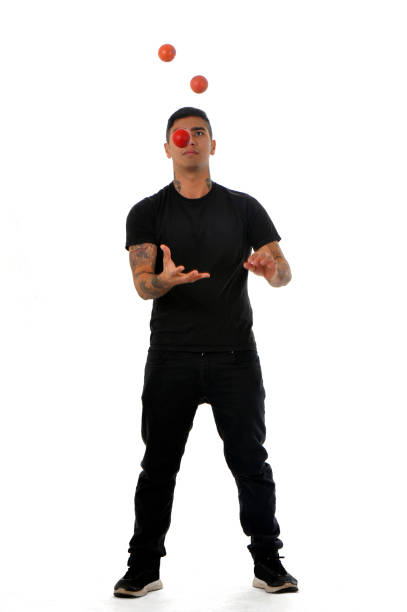
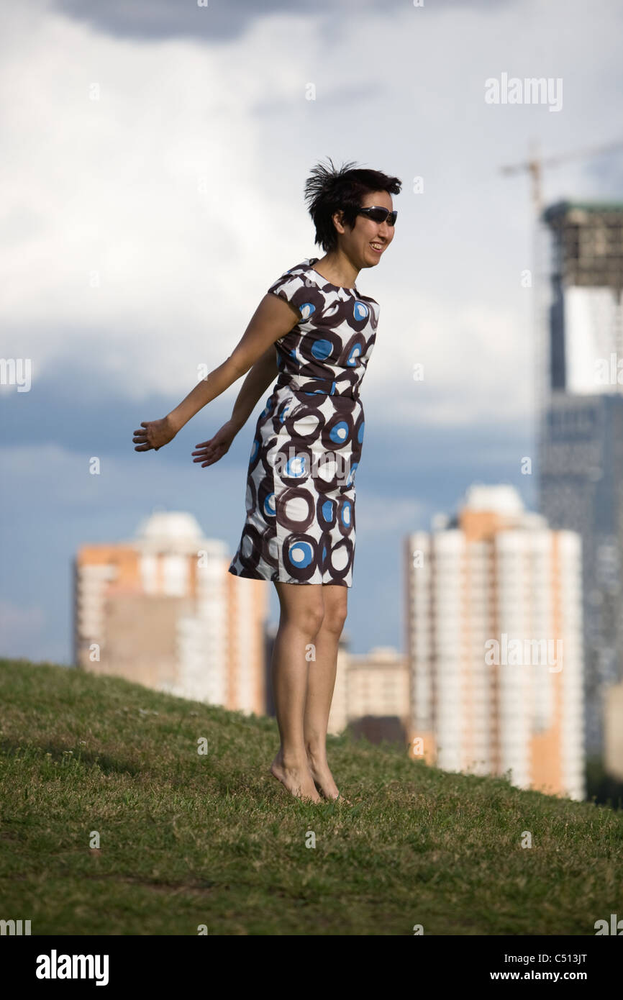

Je suis en recherche d'un poste où la mission principale est de dormir car je souhaite devenir, par la suite, rentier à plein temps pour pouvoir me consacrer pleinement à mes projets personnels et professionnels ( car oui être rentier c'est un métier non défini par France Travail mais bien réel).
On peut donc constater de part mes différentes expériences professionnelles
que je peux m'adapter à différents environnements de travail.
J'aime les challenge, mais surtout le cassoulet.
Est ce que cette info va m'aider dans l'avenir et la réussite de ma vie ?
C'est la question du jour.
Si vous avez la réponse n'hésitez pas à me contacter via MSN.

